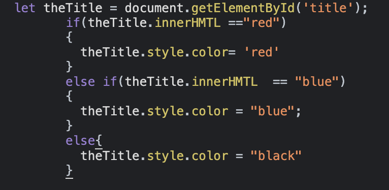

So while HTML is the structure of the page(pieces of wood needed to build a house), and CSS tells them how they want it laid out on the page(where to put the walls etc). I would say that Javascript would be like the manager telling them How to do these steps (pick up a piece of wood and place it over there by moving it forward 5 steps etc) If making a cake, Javascript would be the instructions, CSS would be how many ingredients you need and HTML would be what ingredients you have to make this cake.
Control flow is the way the the code is run. Loops help run certain parts before the next due to more information
is needed to run certain pieces of code.
Loops are a fast way to go though arrays and objects to find certain values that are required for your code. There
a many different loops like: for, forEach, switch, while. These are all commonly used in programming languages.
An example of this in my everyday life would be in my job at the referral centre. We basically use an for loop
for every referral we process.
The Document Object Model (DOM) is where javascript can either change/add
certain language elements/styles to a HTML 'page'.
An example of this interaction would be changing a Title's name depending on either the color is red or not

Arrays are used to hold certain values under a single name. They are
made in the square brackets “[ ]”. Counting the index of an array starts
at 0 like most programming concepts. Loops are used to access arrays,
this way is to check all the values to find the value that is needed.
Arrays are able to hold any type of values, e.g Int, decimal, string ,
objects. They can be connected into other arrays as well.
var bob = [“Mary”,”Jane”]
Objects are used to store information about a item. Objects use ‘curly’
brackets “{ }” to be defined in JS.
new products = { name:”milk”, stock: 6, price:3.20}
From here you get the name by going product.name and it will output
“milk”. Objects are used in databases such as Mangodb and
SQL etc. Objects can have a entity that is an array as well as
shown below:
new products={ name:”milk”, stock: 6, price:3.20, type:[‘almond',
'full', 'lite'] }
Both arrays and objects are super useful for storing information for
later use.
Functions are used to tell the programme instructions. It defines the
method it is doing. Like if you were going to get the mail from the
mailbox, your function would be called getMail and then have
instructions on how you are doing that. It would then called in ur main
function (“daily schedule”) which could also inculde makeDinner etc.
Functions help clean up a lots of mess that would have otherwise been
all in one area, this makes the code easier to read and find the point
which you want to fix or change. Example of a function :
function getMail( ){ … }
function makeDinner(type){ ...}
They are then called by just going:
getMail()
or if you are calling the function for say,
a button event then you can just go:
document.getElementById('dinner').onclick = makeDinner
This doesn’t use the brackets as it wants the function to be called only
when we click the button.